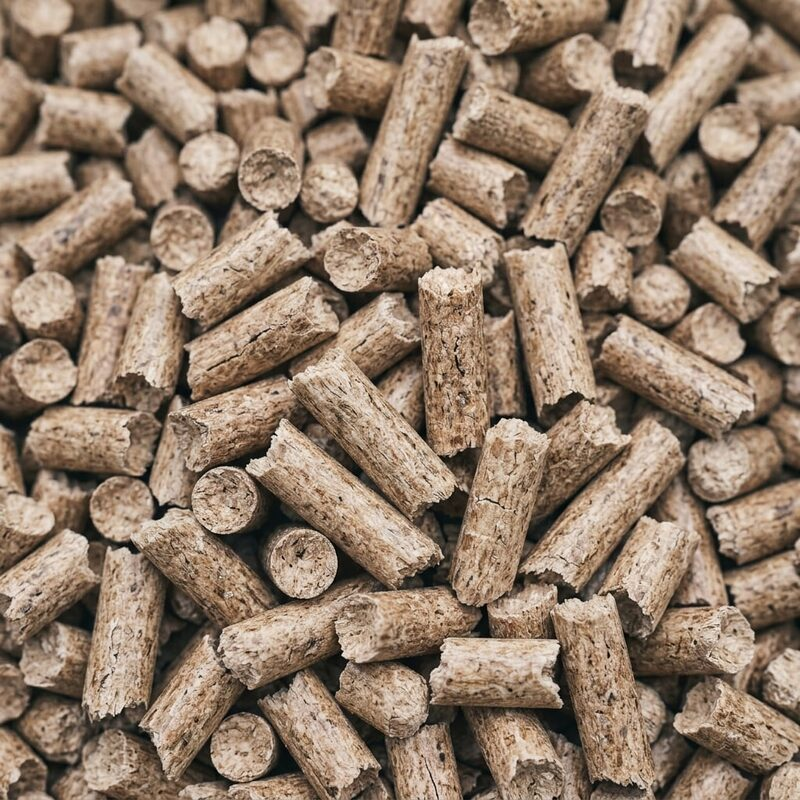
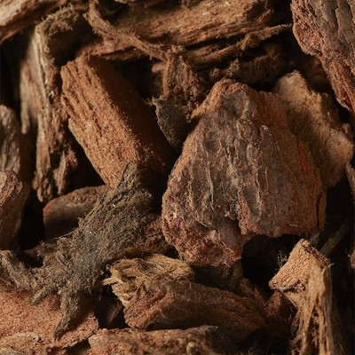
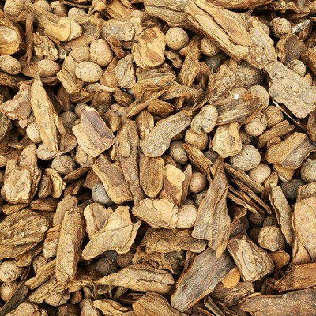
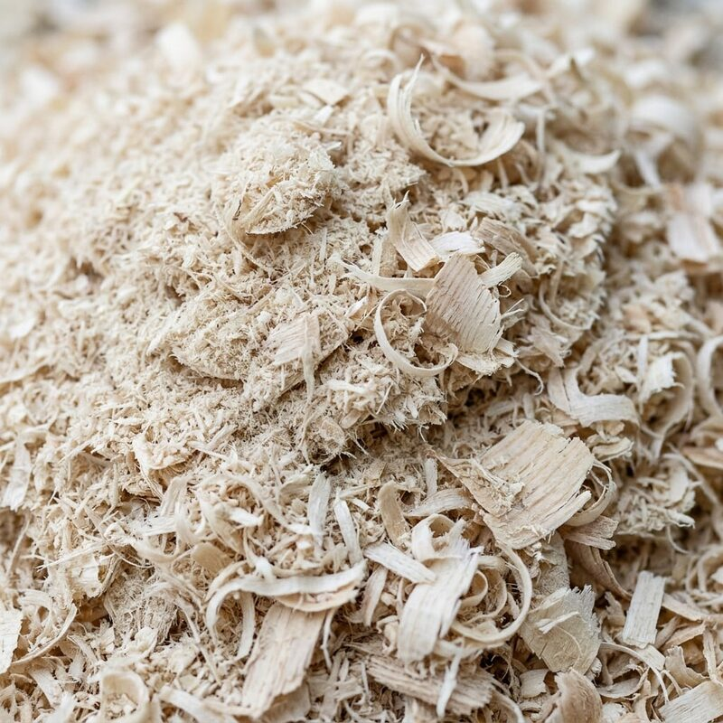
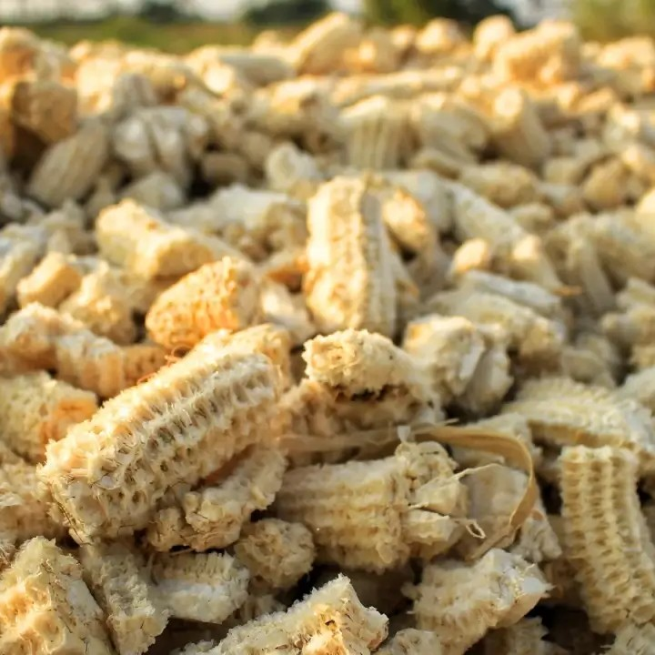
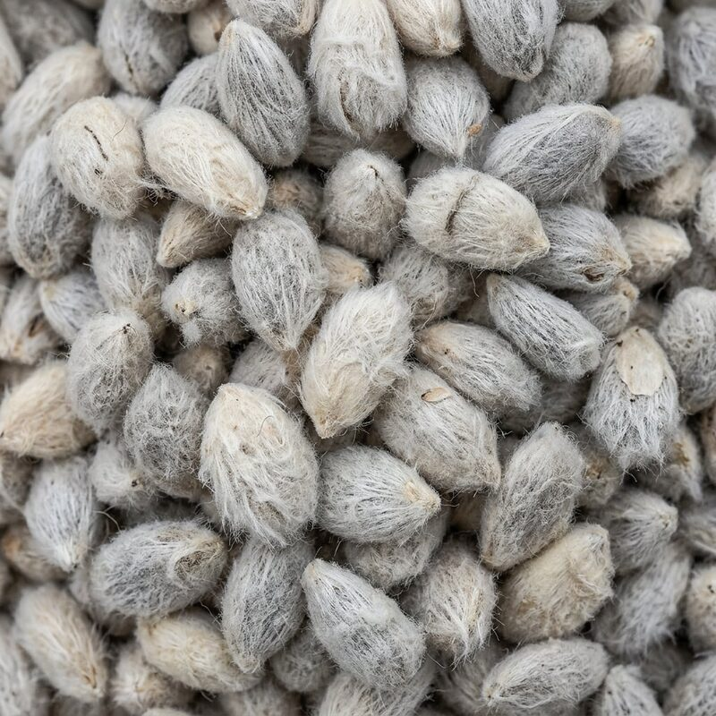
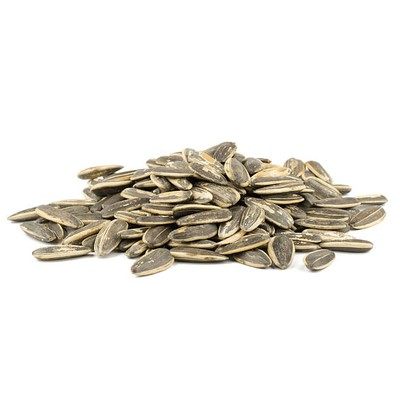
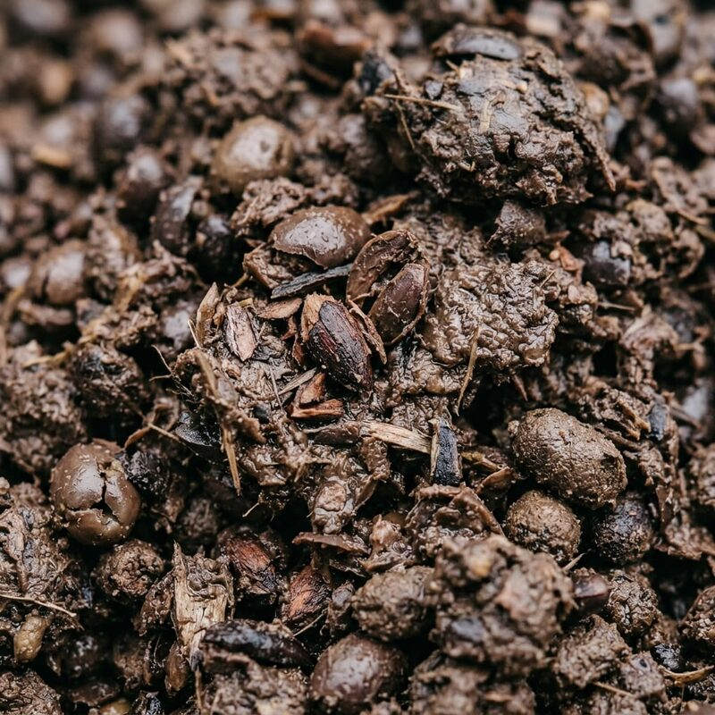

Системы сжигания
Высокоэффективные системы сжигания и колосниковые решётки
Четыре основные технологии сжигания
Высокоэффективные решения по сжиганию твёрдого, пылевидного, жидкого и газообразного топлива с низким уровнем выбросов. Каждая система проектируется инженерным путём в соответствии с видом топлива и требуемой мощностью.

Колосниковые системы сжигания
Широко распространённая технология сжигания, при которой твёрдое топливо сжигается контролируемым образом. Топливо подаётся на поверхность колосниковой решётки, а полное сгорание обеспечивается подачей регулируемого воздуха снизу и/или сверху.
- Типы решёток: со стокерной подачей, неподвижные, подвижные и цепные
- Возможность сжигания топлива среднего и низкого качества
- Контролируемое горение за счёт зонального распределения воздуха
- Высокая механическая прочность и длительный срок службы
- Широкая топливная гибкость: уголь, биомасса, RDF
- Низкие инвестиционные и эксплуатационные затраты
- Адаптация под различные мощности

Системы сжигания в кипящем слое
Современная технология сжигания, обеспечивающая высокоэффективное сжигание твёрдого топлива с низким уровнем выбросов. Песок/инертный материал на поду топки псевдоожижается сжатым воздухом, и топливо равномерно сгорает во взвешенном состоянии.
- КПД сжигания более 90%, низкие выбросы
- Широкая топливная гибкость (уголь, биомасса, RDF)
- Контролируемое горение при 800-900°C, низкий NOx
- Снижение SO₂ за счёт добавления известняка
- Равномерное распределение температуры
- Низкое образование золы и шлака
- Прочная и надёжная система

Системы сжигания пыли и гранул
Специальная технология сжигания, обеспечивающая высокоэффективное сжигание угольной пыли, древесной пыли, гранул биомассы и промышленных горючих пылей. Топливо измельчается и подаётся посредством пневмотранспорта через специальные горелки.
- Конструкция, рассчитанная на пылевидное и гранулированное топливо
- Высокий КПД сжигания и низкие выбросы
- Автоматическая подача топлива и управление
- Низкое образование золы и шлака
- Модульная конструкция, широкий диапазон мощностей
- Утилизация различных видов биомассы и отходов
- Низкие эксплуатационные затраты

Системы сжигания газового и жидкого топлива (горелочные системы)
Промышленные горелочные системы, обеспечивающие высокоэффективное сжигание природного газа, LPG, мазута, дизельного топлива и других жидких/газообразных видов топлива. Благодаря автоматическому управлению, низким выбросам и высокому КПД сжигания они являются ключевым компонентом энергетических установок.
- Варианты на природном газе, LPG, мазуте и двухтопливные (dual-fuel)
- Полностью автоматический розжиг и модулируемое регулирование
- Высокий КПД сжигания (более 95%)
- Низкие выбросы NOx и CO
- Широкий диапазон мощностей (100 кВт – 50 МВт)
- Мгновенный пуск и останов горения
- Точное регулирование температуры и давления
Разнообразие топлива
Системы сжигания Bersey способны использовать в общей сложности 24 вида топлива в 3 категориях: от биомассы и сельскохозяйственных отходов до отходов и альтернативных видов топлива, а также жидкого и газообразного топлива.

Древесные пеллеты

Древесная кора

Древесная щепа

Опилки

Стебли и початки кукурузы

Хлопковые семена

Лузга подсолнечника

Оливковый жмых
Получите предложение для вашего проекта
Свяжитесь с нами по вопросам систем сжигания.